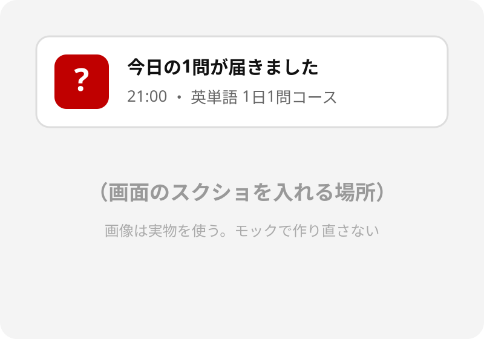

毎晩21時に届く「今日の1問」の通知
その時刻を変えるだけで、続く人は増えるのか
通知はいつ届けば、行動につながるのか？
数値はすべて架空。平均±SE。brackets で検定結果、group で2本をまとめた計画対比
実線＝有意な経路、破線＝直接効果（非有意）。係数と注記は SVG の text で書く
| 指標 | 内容 | 用途 |
|---|---|---|
| 継続日数（行動） | 14日間のうち1問以上解いた日数 | 主要指標 |
| 起動率（行動） | 通知から30分以内にアプリを開いた割合 | 副次指標 |
| 満足度 | 「通知のタイミングに満足している」ほか3項目 | 副次指標 |
質問紙は5件法
Appendix
予備スライド
事後インタビュー（n = 12）